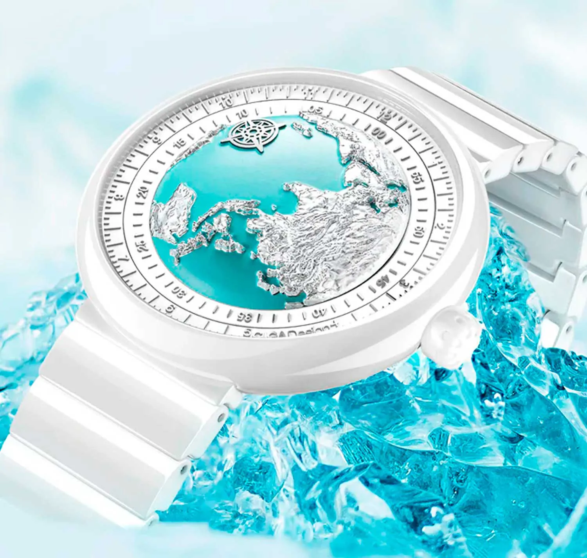
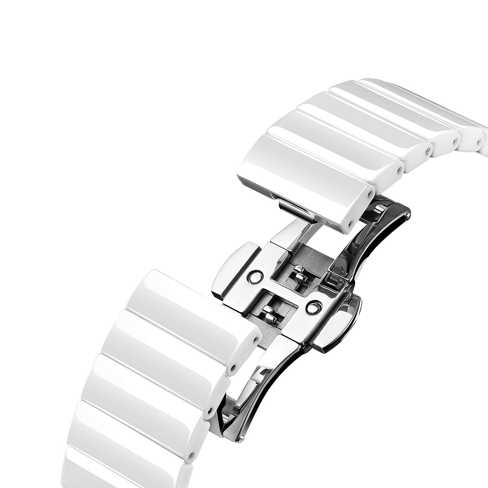
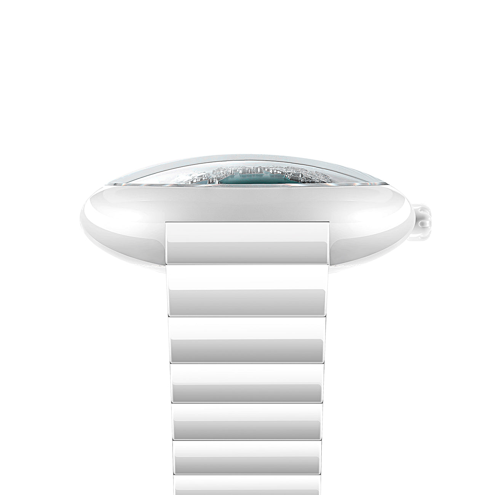
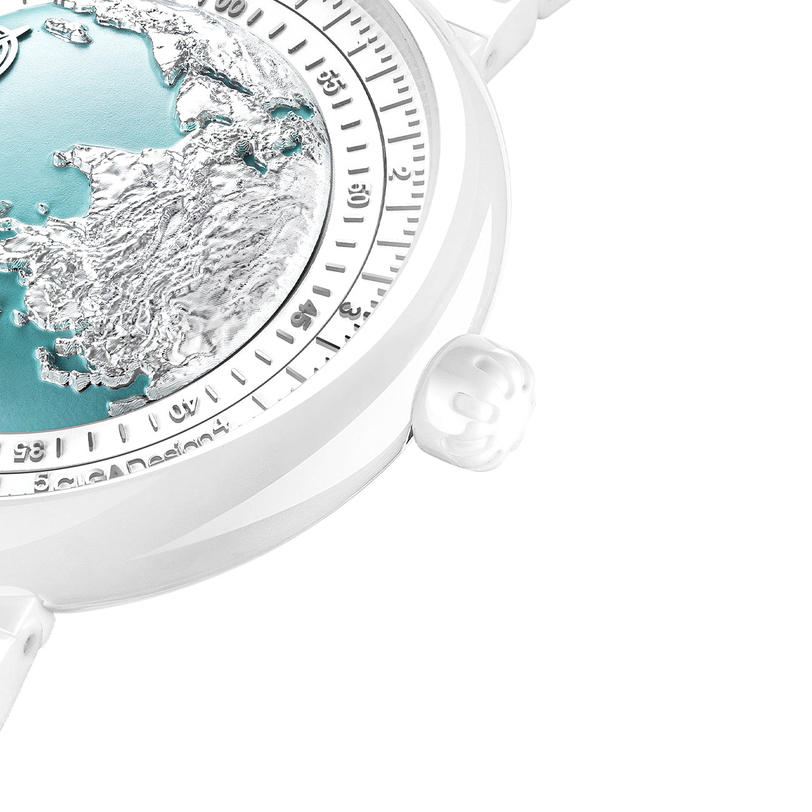

O Ice Age traduz a linguagem visual da linha Blue Planet em uma execução mais clara, leve e feminina, com caixa e pulseira em cerâmica branca e mostrador de forte apelo cinético.
Cerâmica branca · safira · fecho borboleta
O Ice Age funciona como extensão visual da família Blue Planet, com foco maior em superfície, brilho frio e continuidade material entre caixa e pulseira.

O principal argumento visual do Ice Age está na cerâmica branca aplicada à caixa e ao bracelete. A peça transmite limpeza, leveza e permanência, sem depender de ornamentos excessivos para se diferenciar.
No material oficial, a CIGA reforça a sensação glacial por meio do acabamento branco polido, da coroa cerâmica texturizada e da integração com o fecho de borboleta. O resultado é mais próximo de um objeto de design do que de um relógio esportivo convencional.

O Ice Age não deve ser apresentado como cópia literal do Blue Planet II, mas como uma derivação de linguagem. A conexão correta é de família estética e de repertório visual: mostrador mais cinético, apelo escultórico e vínculo com a linha que levou a CIGA ao GPHG 2021.
O site internacional também destaca cristal de safira, fundo transparente e opções de pulseira em cerâmica ou silicone. Nesta revisão, a página foi ajustada para refletir esses pontos sem extrapolar especificações que não estavam claramente sustentadas.
O valor do Ice Age está na conexão com a família estética que consolidou a CIGA no GPHG, não em repetir a mesma peça em outra cor.
Caixa, bracelete e coroa trabalham a mesma narrativa de material, reforçando pureza visual e unidade de design.
A safira reforça acabamento premium, preserva nitidez do mostrador e sustenta a leitura mais refinada da peça.
O conjunto com fecho de borboleta ajuda a manter a apresentação elegante e contínua do bracelete cerâmico.
Cerâmica branca, safira e continuidade formal definem a ficha do Ice Age com mais precisão do que promessas técnicas excessivas.

| Família | Derivação visual da linha Blue Planet |
| Material da Caixa | Cerâmica branca |
| Vidro | Cristal de safira |
| Fundo | Transparente |
| Movimento | Automático CIGA design |
| Resistência à Água | 3 ATM (30 metros) |
| Pulseira Principal | Bracelete cerâmico com fecho de borboleta |
| Opção de Pulseira | Silicone esportivo, conforme edição |
| Coroa | Cerâmica com acabamento texturizado |
| Linguagem Visual | Mostrador cinético com inspiração glacial |
A principal correção aqui foi separar herança estética de especificação técnica. O Ice Age continua conectado à família Blue Planet, mas agora a página evita atribuir ao modelo dados que não estavam claramente confirmados nas referências oficiais consultadas.
O Ice Age é pureza visual e tecnologia premiada. Cada palavra deve refletir essa dualidade.
O Ice Age comunica pureza visual, continuidade material e vínculo com a família Blue Planet. Nesta versão, o discurso foi ajustado para ficar mais fiel ao posicionamento oficial e menos dependente de claims técnicos frágeis.
Dez ângulos narrativos para maximizar o impacto do seu conteúdo sobre o Ice Age.
| # | Direcionamento | Foco Narrativo | Base do Script (Exemplo) |
|---|---|---|---|
| 01 | A Herança do GPHG | Família Blue Planet como ponto de contexto | "O Ice Age faz sentido quando apresentado como releitura em cerâmica branca da linguagem que consolidou a família Blue Planet." |
| 02 | Branco Glacial | Cerâmica como escolha de linguagem visual | "Mais do que cor, o branco aqui é acabamento, superfície e presença. É isso que cria o impacto do Ice Age." |
| 03 | Mais Técnico do que Delicado | Cerâmica e safira como sinais de construção premium | "Apesar da aparência leve, a peça se apoia em materiais associados a acabamento premium, não em um discurso de fragilidade." |
| 04 | Mostrador Cinético | Movimento visual como recurso de conteúdo | "Em vídeo, o Ice Age funciona melhor quando você mostra a dinâmica do mostrador e o brilho frio da cerâmica em movimento." |
| 05 | Leveza Visual | Impacto estético sem excesso de informação | "O Ice Age é forte justamente porque parece limpo, frio e silencioso. O apelo é mais visual do que verbal." |
| 06 | Uma Peça, Uma Intenção | Pulseira e caixa cerâmica integradas | "Caixa e pulseira: mesmo material, mesma temperatura ao toque, mesma intenção." |
| 07 | A Mecânica Visível | Fundo de safira transparente | "Por baixo do branco imaculado, o rotor automático gira. A máquina é parte da arte." |
| 08 | Atemporal por Definição | Branco como escolha estética permanente | "Tendências mudam. O branco glacial permanece." |
| 09 | Mecânica Visível | Fundo transparente e construção refinada | "O fundo transparente ajuda a lembrar que, por trás da estética glacial, continua existindo um relógio mecânico completo." |
| 10 | O Presente que Nenhuma Joalheria Tem | Ocasiões especiais, exclusividade real | "Para dar de presente para quem merece algo que nenhuma joalheria tem." |
Imagens oficiais do Ice Age disponíveis para uso em seu conteúdo.


Compre direto no site oficial da CIGA design Brasil. Garantia, parcelamento e envio para todo o país pela JG Importadora.
Descontos cumulativos: 5% no Pix e mais 5% se for a sua primeira compra.
Comprar no Site Oficial usecigadesign.com.br